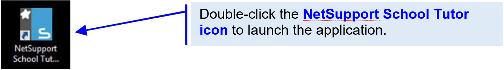

NetSupport School (NSS) is a classroom computer management software that provides teachers with the ability to show the teacher's or students' screen to all COWs, monitor and control students' COWs, hand out and collect files, as well as assess students' learning.
NetSupport School is currently set up at all ACE rooms with COWs.
1. Locate the NetSupport School Tutor icon on the desktop and double-click it.

2. In the default New Class Dialog box, click on the OK button. The software will scan for all the active COWs in the room and connect to them.

The NSS Instructor Interface consists of the following functional areas:
Menu Bar – Lists of drop-down menus to access any features of NSS
Tool Bar – Groups of short-cuts to access the more frequently-used features of NSS View Menu – Groups of viewing options for the display area
View Area – Display area for the view option selected

Click on Show Menu. Choose the 1st option Show – Show your desktop to all students.

To stop showing the Instructor’s Screen on COWs
1. Locate the green arrow icon on the Windows Toolbar. Double-click to close the Instructor Screen.

Alternatively, you can do the following.

1. Click on the Show Menu function in the Tool Bar to display a list of show options.

2. In the Exhibit section, click (Select a student) and choose a COW from the drop-down list to display.

Click the Exhibit area after a selection is made.

Alternatively, you can

To stop displaying a student’s COW screen, click Stop to return to the Instructor Screen.

The Instructor can use the Send/Collect Work function to distribute or collect files from student computers easily and quickly. This saves the hassles of passing files around via thumb drives or emails.
Note: Any files sent will overwrite existing files with the same names.
Click on the Send/Collect Work icon.

There are 3 options in the dropdown menu:
1. In the option list, click Send Work.

2. In the Quick Send Dialog box, do the following:

After clicking, the send status is displayed in the Results Dialog box.

3. Click OK to close it.
Upon successful sending, the file(s) will appear on the students’ COWs. In this case, the file is sent to the desktops.

Note: An important step to ensure proper and efficient file collection.
1. In the drop-down menu, click Collect Work.

2. In the Quick Collect Dialog box, do the following:

3. After clicking, the collect status is displayed in the Results Dialog box. Click OK to close it.

The Instructor can post a simple survey to the students’ COWs and get the students to respond by selecting and submitting an option. The submitted results are visible on the Instructor’s COW and can be shown to the students. The results statistics can also be saved.
1. Click the Survey icon on the View Menu to open the Survey section.

2. Fill in the Survey fields:
3. Click the Send button to send the survey to all the students’ COWs.

After clicking the Send button, the Instructor Screen will wait for students’ responses.

The survey question will appear on each student’s COW Screen. See examples below.

Note: You can also select specific student(s) to send the survey to.

The students’ responses received by the Instructor’s COW will be displayed in the Survey Results pane. This result is only visible to the Instructor.

To share the Survey Results with the students, click the Show button. This will post the statistics to all the students’ COWs screen.

The survey outcome will appear on the students’ COW Screens.

The Instructor can switch off all students’ COWs via NSS.
1. Click on the Manage icon.
2. In the drop-down menu, click Power Off.

| Problem | How to resolve |
|---|---|
| When COWs cannot switch on / CPU is on but screen is not on | 1. Switch on the screen – back of the screen 2. Make sure that the cables and plug are connected |
| When NSS cannot detect the COW | 1. Refresh the screen, by clicking on 'refresh' (under Manage Class – in the NSS Toolbar) (Press F5 on keyboard) 2. If individual COWs are missing on the NSS view area, please check if they are connected to the WIFI |
| When the COW’s screen switches off during the lesson. | 1. Check if the COWs have gone to "sleep" mode by pressing on the button on the CPU. (wait for startup) |
| When COWs drop off from the WiFi | 1. The WIFI may be saturated and unstable, the screens may come back again after a while. 2. Please monitor closely and call Dover helpdesk. (and inform CoLEAD) |
| When the keyboard and mouse are not working | 1. Check that the keyboard and mouse is switched on (on/off switch on the bottom of the devices) 2. Replace the batteries if necessary (at the AV mic box) 3. Make sure that mouse and keyboard are placed at the right COW. |
| Missing keyboard and mouse | 1. Please contact Dover helpdesk for replacement. (As we have limited number of wireless keyboard and mouse, the replacement may be a wired version.) |
| Windows update performing in the midst of your class | 1. You can manually defer the update till the end of the class when the COWs are being switched off. (ask students to defer the update) |
| When playing a video, student COWs are lagging | 1. The lagging is expected as the transmission is through WIFI, hence it is not advisable to play a video through the COWs. 2. Switch off the sound on the student’s COWs if necessary. (TV remote can be found in the AV mic box) |
| Either teacher PC or student COWs requires log in | 1. By default, no login is required, try to restart first. 2. If login is still required, please check with Dover helpdesk. |
Dover helpdesk: 6592 8539